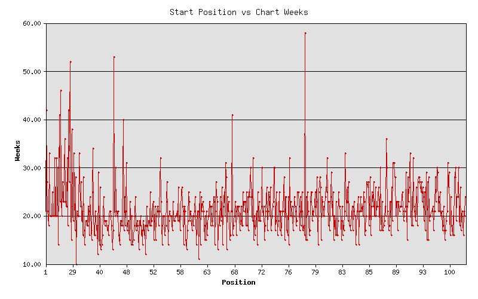

No. 1 Hits - Entry & Longevity
If you plot the number one charting hits (entry position vs weeks on chart) for three decades, what does it reveal? Is there a trend?
Here is what must be harvested:
And here is the Perl program that answers this question:
#!/usr/bin/perl
use strict;
use warnings;
use Chart::LinesPoints;
use Data::Dumper::Compact qw(ddc);
use Mojo::DOM;
use Mojo::UserAgent;
This is the standard perl preamble along with the programming libraries to use.
my $base = 'http://www.REDACTED.com/';
my $url = $base . 'default.asp?Lang=English&Chart=D&ChDay=01&ChMonth=01&ChYear=1970&ChBand=&ChSong=';
my $ua = Mojo::UserAgent->new;
Here the first of the URLs is fetched with Mojo::UserAgent.
Next, we need a bucket for the number one hits that we see, for each page inspected:
my %seen;
And here is the meat of the program - a loop over 3 decades by week:
for my $i (1 .. 52 * 10 * 3) {
The first thing in the loop is that we play nice and pause before fetching a new URL:
sleep 5 unless $i == 1;
print "$i. $url\n";
my $tx = $ua->get($url);
Then we assign the content of the page body to Mojo::DOM, and find the "Next Chart" link, for the next iteration:
my $dom = Mojo::DOM->new($tx->res->body);
$url = $base . $dom->find('a[href$=ChMode=N]')->[0]->attr('href');
But for this iteration we want to grab the last (nested) table on the page, which holds the information we care about:
my @data = $dom->find('table > tr > td:last-child > table > tr')
->map('all_text')
->each;
Now upon inspection of this data, we find that there are literal "\n", "\r", and "\t" characters in each row. Yuck! So we make individual, escaped strings to discard:
my $n = quotemeta('\\n');
my $r = quotemeta('\\r');
my $t = quotemeta('\\t');
Here is the part of the loop that sanitizes the data by row, so that we have clean data with which to work:
my @lines;
for my $d (@data) {
$d =~ s/$n//g;
$d =~ s/$r//g;
$d =~ s/$t//g;
my @row = split /[\n\r\t]+/, $d;
my @partial;
for my $r (@row) {
$r =~ s/\s+/ /g;
$r =~ s/^\s+//;
$r =~ s/\s+$//;
next if $r =~ /^\s*$/;
push @partial, $r;
}
push @lines, \@partial;
}
It is a bit of gymnastics, but fortunately this is one thing perl really excels at - processing text.
The next code strips off the lines that do not have song data (those with a number starting the line data):
my @records;
for my $line (@lines) {
next unless $line->[0] =~ /^\d+$/;
push @records, $line;
last;
}
And here is the final purpose of this loop - to save the first record (member 0) by name, entry position and number of weeks spent on the chart.
$seen{ $records[0][4] } = [ $records[0][6], $records[0][8] ]
unless $seen{ $records[0][4] };
}
print ddc(\%seen); # Show the harvested songs
A picture is worth a thousand words. So even though we have the results, they are in the form of numbers without context.
Enter the Chart module which we will use to make a line-plot of our records:
my $chart = Chart::LinesPoints->new(500, 500);
$chart->set(
legend => 'none',
title => 'Start Position vs Chart Weeks',
x_label => 'Position',
y_label => 'Weeks',
include_zero => 'false',
precision => 2,
skip_x_ticks => 4,
brush_size => 2,
pt_size => 4,
y_grid_lines => 'true',
);
Okay. This bit may be a bit confusing. The first call to ->add_dataset establishes the x-axis data. The second sets the y-axis. Each is sorted by the x-axis data so that the x and y points will match-up:
$chart->add_dataset(map { $seen{$_}[0] } sort { $seen{$a}[0] <=> $seen{$b}[0] } keys %seen);
$chart->add_dataset(map { $seen{$_}[1] } sort { $seen{$a}[0] <=> $seen{$b}[0] } keys %seen);
Finally the chart is printed to a graphics file:
$chart->png("$0.png");
And what does this look like?

It appears that there is no trend at all. Okay. It might be more interesting to compare the time spent at the number one position... (See the update below.)
By the way, here is an example of a record that is processed into the chart:
'Bridge Over Troubled Water SIMON AND GARFUNKEL' => [49, 14]
That says, "Bridge Over Troubled Water" entered the chart at position 49 and stayed in the charts for 14 weeks.
Update:
I added logic to the code to also count the number of weeks a song is at number one.
So this means having a third member:
'Bridge Over Troubled Water SIMON AND GARFUNKEL' => [49, 14, 6]
Anyway, this shows that ... there is really no trend either. But maybe you could say that the longer a hit song is number one, the longer it stays in the charts. This is not earth shattering news, by any means.
For what it's worth, here is a 3D plot (made with R), where the axes are as above x=entered, y=charted, z=stayed at #1: